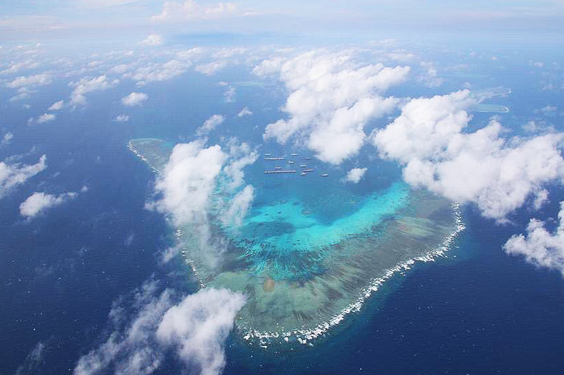

CORONA VIRUS UPDATE
WEST PHILIPPINE SEA UPDATE
Coronavirus Cases:
1,367,894
Deaths:
23,809
Recovered:
1,291,389

More than 100 additional ships detected in West Philippine Sea
MANILA, Philippines — A large increase in ships within country's exclusive economic zone in the West Philippine Sea has been detected this month, according to a report by a US-based geospatial imagery and data analysis company.
In its 14-page report released on June 20, US-based Simularity noted that the number of ships — likely Chinese — in the Philippine EEZ jumped from 129 to 238, an increase of 109 ships.
"Between mid-May and mid-June 2021, the number of ships within the Union Banks increased from 9 to 236 and the number of ships near Gaven (Burgos) Reef in Tizard Bank decreased from 234 to 71," the report read.
The world hasn’t contained the spread of COVID-19 that has, so far, infected over 85 million people globally, yet it faces a more contagious variant of the deadly virus.
The new COVID-19 variant known as B117 was first detected in the United Kingdom in September. In November, around a quarter of the reported COVID-19 cases in the country were found to be of the new variant of the SARS-CoV2, the virus that causes COVID-19.
Health experts have said that viruses naturally mutate. Scientists earlier said they observed minor mutations in the coronavirus that have not impacted its ability to spread or cause disease in any significant way.
The BBC reported that the virus that was first detected in Wuhan, China, was not the same variant that was detected in most corners of the world. To date, experts have detected 12,706 mutations of SARS-CoV2. Of these, 398 strains of the novel coronavirus were found to have occurred repeatedly and independently.
To understand what mutation means, Dr Celia Carlos of the Research Institute for Tropical Medicine (RITM) said that viruses, just like humans, undergo changes in their structure.
"They multiply. Nagmu-multiply po ang living organisms at may changes po na nangyayari in a normal rate (Living organisms multiply and changes occur). In a normal rate, may changes which scientists called mutation. The changes or mutations can occur through alterations in its structure," Carlos explained in a virtual press briefing on December 27.
MANILA, June 22 (Reuters) - Philippines President Rodrigo Duterte, frustrated by the slow pace of COVID-19 vaccinations in his country, threatened people who refuse to get inoculated with jail or an injection of Ivermectin, an anti-parasite drug widely used to treat animals.
Ivermectin has been touted as an alternative treatment for COVID-19 but U.S. and European regulators and the World Health Organization (WHO) have recommended against it.
"You choose, vaccine or I will have you jailed," Duterte said in a televised address late on Monday, following reports of low turnout at several vaccination sites in the capital Manila.
"But for as long as you are here and you are a human being, and can carry the virus, get vaccinated.
"Otherwise, I will order all the village captains to have a tally of the people who refuse to be vaccinated. Because if not, I will have Ivermectin meant for pigs injected into you."
Duterte is famous for his bellicose rhetoric and his remarks on Monday contradicted those of his health officials, who have said getting vaccinated against COVID-19 is voluntary.
"Don't get me wrong, there is a crisis in this country," Duterte said. "I'm just exasperated by Filipinos not heeding the government."
With over 1.3 million cases, the Philippines is fighting one of Asia's must stubborn COVID-19 epidemics.
But as of June 20, just 2.1 million people had been fully vaccinated of the 70 million people targeted for this year.
Duterte, who has been criticised for his tough approach to containing the virus, also stood by his decision not to let schools reopen.
In the same televised address, he took a swipe at the International Criminal Court, after an ICC prosecutor sought permission from the court for a full inquiry into thousands of killings by police in a war on drugs ordered by Duterte. read more
Duterte, who cancelled the Philippines' membership of the ICC's founding treaty, said he would not cooperate with the probe and described the ICC as "bullshit".
"Why would I defend or face an accusation before white people. You must be crazy," he said.
Human rights groups say authorities have summarily executed drug suspects, but Duterte maintains those killed had violently resisted arrest.
Asked for comment, ICC court spokesperson Fadi El Abdallah said: "The court is an independent judicial institution, and does not comment on political statements".